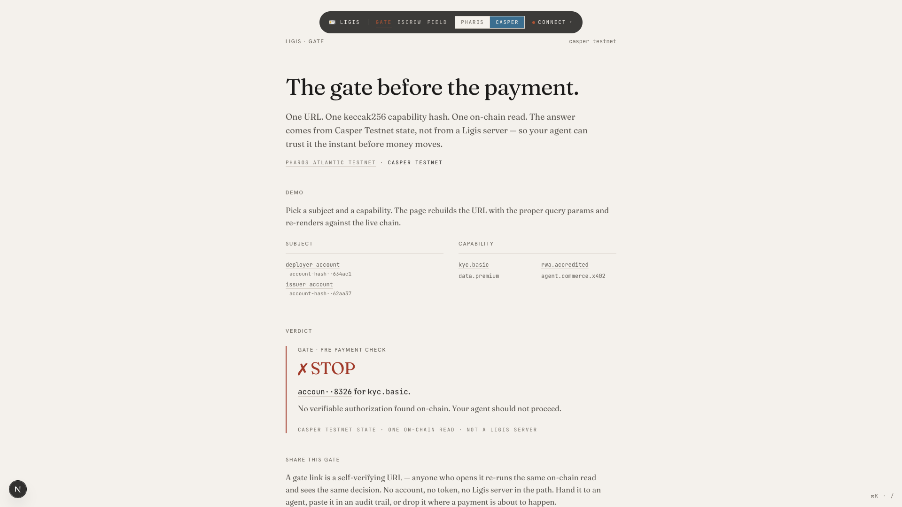
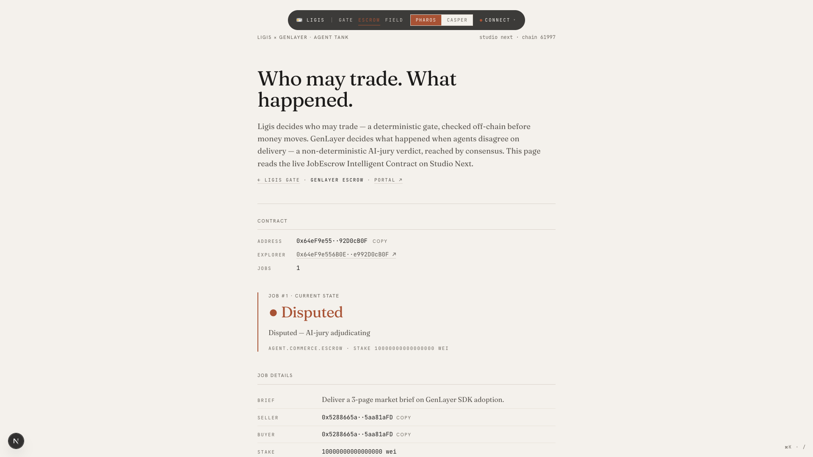
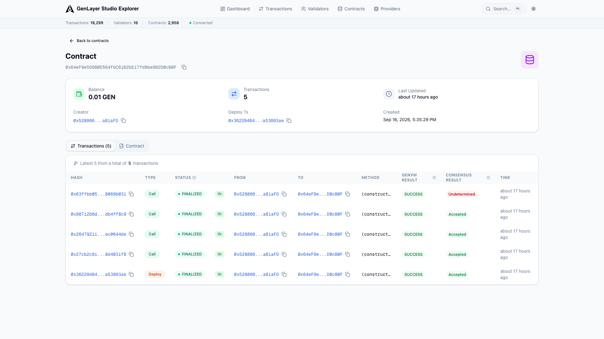

Ligis x GenLayer - Agent Tank
Who may trade?
What happened?
Two questions. Two different systems. One stack.
01 - The gate - who may trade
casper-testnet
A deterministic gate. One on-chain read.

ligis.vercel.app/gate - deterministic GO or STOP
02 - The escrow - what happened
studio next - chain 61997
The receipt goes to GenLayer. The stake locks on-chain.

ligis.vercel.app/genlayer - live JobEscrow state
03 - The dispute - AI-jury
explorer-studio-dev.genlayer.com
Validators fetch the deliverable. An LLM judges it against the brief.

5 transactions - all GenVM SUCCESS
equivalence principle
Validators agree on the
verdict
, not the reasoning.
resolve outcome
undetermined
A real consensus outcome - not a stub.
04 - The verdict - why GenLayer
No deterministic fallback for
"was it good enough?"
lifecycle
open
stake locked
delivered
evidence submitted
disputed
AI-jury adjudicating
resolved
release / refund
the gap
If you remove the LLM and the web fetch, the product collapses.
That is exactly why the adjudication layer lives on GenLayer - and not on the payment rail.
one stack
Ligis gates
who may trade
.
GenLayer adjudicates
what happened
.
0x64eF9e55..92D0cB0F
studio next - 61997
github.com/sneldao/ligis